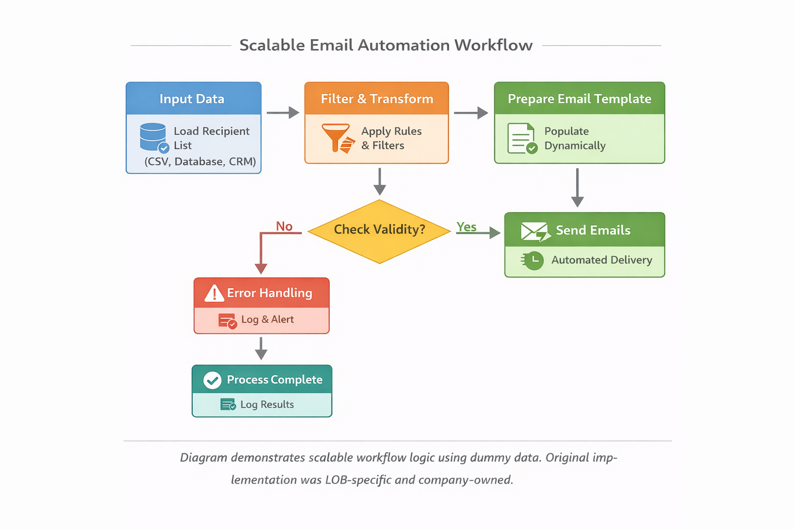
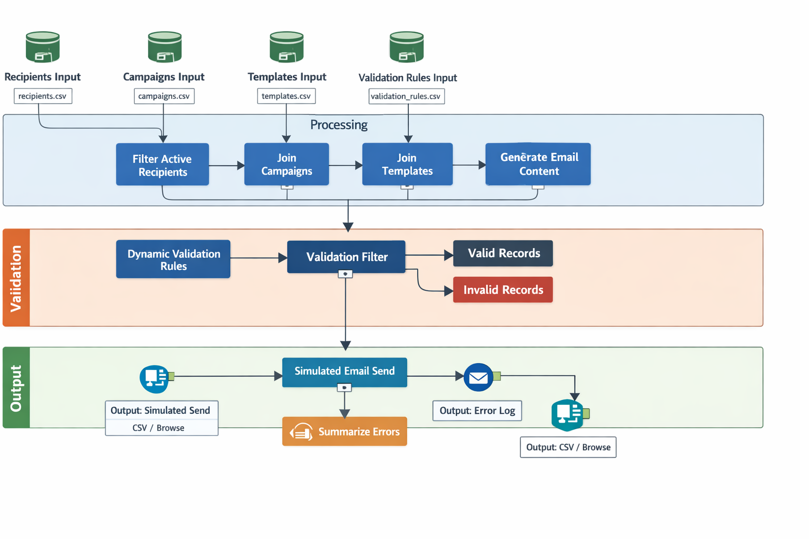

Email Automation Initiative (Scalable Design) – Driving Operational Efficiency and Innovation
Designed and implemented an automation workflow using Alteryx to streamline internal team communications and operational tasks. This initiative reduced repetitive administrative work and promoted a culture of innovation and automation within the team. The workflow uses dummy data in the portfolio version to demonstrate logic and best practices, while production data and company-specific implementations remain confidential and company-owned.
Purpose
- Automate routine engagement and notification emails
- Improve operational efficiency and team productivity
- Demonstrate and promote automation capabilities within the LOB
Key Features
- Automates generation and sending of internal emails for engagement purposes
- Applies dynamic, data-driven validation rules for accurate record handling
- Tracks invalid records and summarizes errors for reporting and dashboards
- Easy-to-maintain and extendable for future automation initiatives
- Fully designed workflow logic replicated in a portfolio-safe version
Impact & Benefits:
- Reduces repetitive manual work and increases operational efficiency
- Provides a **scalable, reusable automation framework** applicable to any team or business unit
- Encourages adoption of automation and process improvement within teams
- Demonstrates design thinking, problem-solving, and technical automation skills without exposing company-owned assets
Workflow Diagram
⚠️ **Note:** This repository contains a **portfolio version of a workflow I personally designed**. It uses **dummy data for demonstration purposes**. The production workflow I created is LOB-specific hence implemented differently and separately in the company environment for operational use.
Workflow Steps (Scalable Version)
- Input Data: Load recipient list, campaigns, templates, and validation rules from external CSVs
- Filter/Transform: Apply dynamic validation rules and filter active recipients
- Prepare Email Template: Generate email subject and body dynamically for different campaigns or teams
- Decision Point: Validate data, check for missing information, and split into valid and invalid records
- Output:
- Valid Records → Simulated email send for demonstration
- Invalid Records → Summarized error metrics and logs for audit/reporting